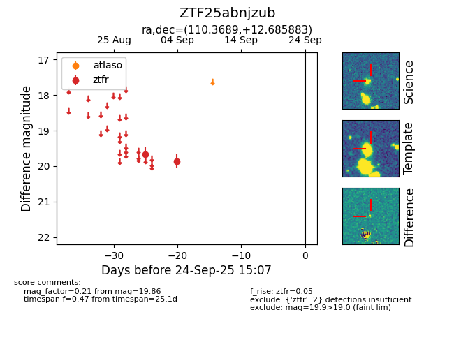

FINK: ZTF25abnjzub
Lasair: ZTF25abnjzub
ALeRCE: ZTF25abnjzub
ZTF25abnjzub (ztf,fink)
equatorial (ra, dec) = (110.3689,+12.68588)
galactic (l, b) = (204.8521,+12.33392)

last ztfr=19.86
2 ztfr detections